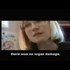

<!DOCTYPE html>
<html lang="en">
 <head>
  <meta charset="utf-8"/>
  <title>
   The events uncovered in Pizzagate are not unique to the USA (French documentary with english subtitles)
  </title>
  <meta content="Post on /v/Pizzagate archived on 2016-11-26 by Zeed." name="description"/>
  <meta content="The events uncovered in Pizzagate are not unique to the USA (French documentary with english subtitles)" property="og:title"/>
  <meta content="Post on /v/Pizzagate archived on 2016-11-26 by Zeed." property="og:description"/>
  <link href="../../page.css" rel="stylesheet"/>
  <meta content="https://voat.pizzagate.hackliberty.org/thumbnails/03/54/03543d40-7689-4e7c-8aeb-335edf4fbbff.jpg" property="og:image"/>
  <meta content="https://voat.pizzagate.hackliberty.org/v/pizzagate/1437675.html" property="og:url"/>
  <meta content="width=device-width, initial-scale=1" name="viewport"/>
  <link href="https://voat.pizzagate.hackliberty.org/1437675.html" rel="canonical"/>
  <meta content="article" property="og:type"/>
  <meta content="Voat /v/Pizzagate Archive" property="og:site_name"/>
  <meta content="en_US" property="og:locale"/>
  <meta content="summary_large_image" name="twitter:card"/>
  <meta content="The events uncovered in Pizzagate are not unique to the USA (French documentary with english subtitles)" name="twitter:title"/>
  <meta content="Post on /v/Pizzagate archived on 2016-11-26 by Zeed." name="twitter:description"/>
  <meta content="https://voat.pizzagate.hackliberty.org/thumbnails/03/54/03543d40-7689-4e7c-8aeb-335edf4fbbff.jpg" name="twitter:image"/>
 </head>
</html>
<body class="dark">
 <div id="container">
  <!-- array (
  'submissionid' => 1437675,
  'creationDate' => '2016-11-26 09:52:59',
  'domain' => 'youtube.com',
  'formattedContent' => NULL,
  'isAdult' => 0,
  'isAnonymized' => 0,
  'subverse' => 'pizzagate',
  'thumbnail' => '03543d40-7689-4e7c-8aeb-335edf4fbbff.jpg',
  'title' => 'The events uncovered in Pizzagate are not unique to the USA (French documentary with english subtitles)',
  'url' => 'https://www.youtube.com/watch?v=TpEuTstCLI4',
  'userName' => 'Zeed',
  'archivedLink' => NULL,
  'archivedDomain' => NULL,
  'isDeleted' => 0,
) -->
  <div style="text-align:center; font-size:24px; font-weight:bold;">
   <a href="../../index.html" style="text-decoration: none; color: inherit;">
    Voat /v/Pizzagate Archive
   </a>
  </div>
  <div class="content" role="main">
   <div class="sitetable linklisting" id="siteTable">
    <div class="submission id-1437675 link type-text" id="submission-1437675">
     <a name="submissionTop">
     </a>
     <p class="parent">
     </p>
     <a class="thumbnail may-blank" href="https://www.youtube.com/watch?v=TpEuTstCLI4" target="_self">
      
     </a>
     <div class="entry unvoted">
      <p class="title">
       <a class="title may-blank" href="https://www.youtube.com/watch?v=TpEuTstCLI4" tabindex="1" target="_self" title="The events uncovered in Pizzagate are not unique to the USA (French documentary with english subtitles)">
        The events uncovered in Pizzagate are not unique to the USA (French documentary with english subtitles)
       </a>
       <span class="domain">
        (
        <a href="https://archive.searchvoat.co/search.php?d=youtube.com">
         youtube.com
        </a>
        )
       </span>
      </p>
      <p class="tagline">
       submitted
       <time datetime="2016-11-26T09:52:59+00:00" title="11/26/2016 9:52:59 AM">
        2016-11-26T09:52:59
       </time>
       by
       <span class="userattrs">
        <a class="author may-blank" href="https://archive.searchvoat.co/search.php?u=Zeed">
         Zeed
        </a>
       </span>
      </p>
      <ul class="flat-list buttons">
       <li class="first">
        <a class="comments may-blank" href="https://archive.searchvoat.co/v/pizzagate/1437675" rel="nofollow">
         1 comment
        </a>
       </li>
      </ul>
     </div>
     <div class="child">
     </div>
     <div class="clearleft">
     </div>
    </div>
    <div class="clearleft">
    </div>
   </div>
   <div class="horizontal-line">
   </div>
   <div class="commentarea">
    <div class="sitetable nestedlisting" id="siteTable">
     <div class="child id-6937338 comment even" style="">
      <div class="entry unvoted">
       <div class="noncollapsed" id="6937338" style=";">
        <p class="tagline">
         <a class="author may-blank" href="https://archive.searchvoat.co/search.php?u=Zeed">
          Zeed
         </a>
         <span class="userattrs">
         </span>
         <time datetime="2016-11-26T10:14:58+00:00" title="11/26/2016 10:14:58 AM">
          2016-11-26T10:14:58
         </time>
        </p>
        <div class="usertext-body may-blank-within" id="commentContent-6937338">
         <div class="md">
          <p>
           <p>
            Here is the documentary in two parts instead of nine (Dailymotion is a banned domain for sharing links apparently due to spammers and the admins never lifted the ban):
           </p>
           <p>
            <a href="http://www.dailymotion">
             http://www.dailymotion
            </a>
            (DOT) com/video/xn34nr_children-s-rapes-end-of-silence-1-2-viols-d-enfants-la-fin-du-silence_news
           </p>
           <p>
            <a href="http://www.dailymotion">
             http://www.dailymotion
            </a>
            (DOT) com/video/xn35q3_children-rapes-end-of-silence-2-2-viols-d-enfants-la-fin-du-silence_news
           </p>
           <p>
            Elise Lucet, the woman who presented the documentary, well over a decade later, talks about it (No subtitles):
           </p>
           <p>
            <a href="https://www.youtube.com/watch?v=ayA0eCtssvw">
             https://www.youtube.com/watch?v=ayA0eCtssvw
            </a>
           </p>
           <p>
            (Essentially, she says there should an investigation on it, because there are a lot of things to be found.)
           </p>
           <p>
            Two french "infowarriors" discuss about the documentary and reveal that the socialist congresswoman in the documentary today refuses to talk about the documentary and the woman who made the documentary got removed from her job and refuses to answer questions about it because they quote:"My life depends on it". (No subtitles):
           </p>
           <p>
            <a href="https://www.youtube.com/watch?v=Xx1uLwjuwDM">
             https://www.youtube.com/watch?v=Xx1uLwjuwDM
            </a>
           </p>
          </p>
         </div>
        </div>
        <ul class="flat-list buttons">
         <li class="first">
          <a class="bylink" href="https://archive.searchvoat.co/v/pizzagate/1437675/6937338" rel="nofollow">
           link
          </a>
         </li>
        </ul>
       </div>
      </div>
     </div>
    </div>
   </div>
  </div>
 </div>
 <div class="footer-container">
 </div>
</body>
